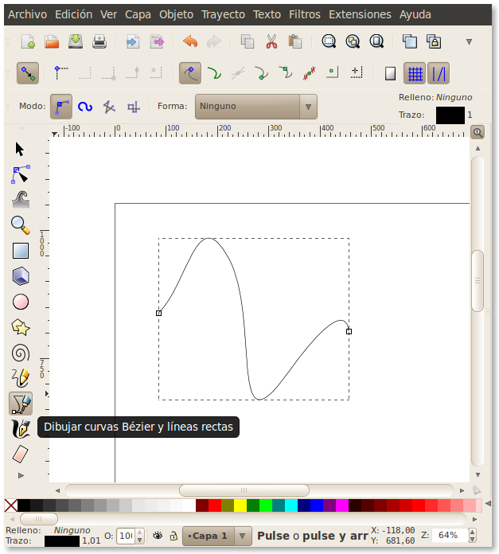
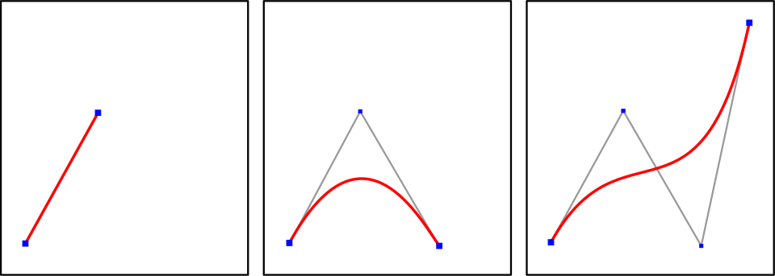
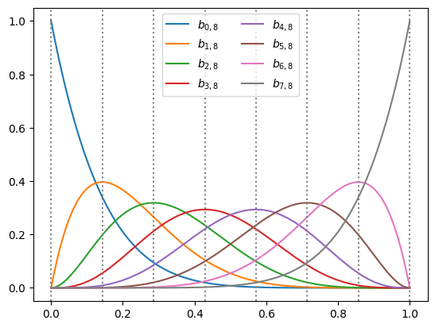

There are a few constraints to the CDF $F(X)$:

It has a very handy drawing tool for Bézier curves
These Bézier curves are a special type of polynomial which can be constrained to a bounding box
A Bézier curve of degree $n$ is defined by $n+1$ control points $P_i$ in normalized coordinates $t$ ("time"): $$B_n(t) = \sum_{i=0}^{n} \binom{n}{i} t^i (1-t)^{n-i} P_i, \quad \text{with} \quad t \in [0, 1]$$
Examples for Bézier curves of degrees 1 to 3

This curve is named after French engineer Pierre Bézier, who used it in the 1960s for designing curves for the bodywork of Renault cars.
A Bernstein polynomial of degree $n$ is defined as:
$$b_{i,n}(t) = \binom{n}{i} t^i (1-t)^{n-i}, \quad \text{with} \quad i = 0, \dots, n$$
Compare this to the definition of the Bézier curve:
$$B_n(t) = \sum_{i=0}^{n} \binom{n}{i} t^i (1-t)^{n-i} P_i, \quad \text{with} \quad t \in [0, 1]$$
$$b_{i,n}(t) = \binom{n}{i} t^i (1-t)^{n-i}, \quad \text{with} \quad i = 0, \dots, n$$

Interesting properties of Bernstein polynomials:
Compute the CDF as a weighted sum $$ F(t) = \sum_{i=0}^{n} \beta_i \cdot b_{i, n}(t), \quad \text{with} \quad \beta_i \ge 0$$
The $\beta_i$ are the y-coordinates of the CDF's control points. Along the $X$-axis, the control points are uniformly distributed at $t_i = \frac{i}{n}$.
Bernstein invented these polynomials in 1912 to prove the Weierstrass approximation theorem
Weierstrass approximation theorem says that any continuous function on a closed interval can be uniformly approximated by polynomials
Vitale proved in 1975 that any continuous PDF $f(x)$ on $[0,1]$ can be uniformly approximated by a mixture of Beta distributions
$$f_n(x) = \frac{1}{n} \sum_{i=0}^{n-1} w_i \cdot \Beta \big(x \;\big|\; \alpha = i+1, \beta =n-i \big)$$
Our CDF is a Bézier curve of degree $n$: $F(t) = \sum_{i=0}^{n} \beta_i \cdot b_{i,n}(t)$
The derivative of a Bernstein polynomial is the difference of two polynomials of degree $n-1$:
$$\frac{d}{dt} b_{i,n}(t) = n \left( b_{i-1, n-1}(t) - b_{i, n-1}(t) \right)$$
Applying this to $F(t)$ causes a telescoping sum, mapping the difference directly to the coefficients:
$$f(t) = \frac{d}{dt}F(t) = n \sum_{i=0}^{n-1} (\beta_{i+1} - \beta_i) b_{i, n-1}(t)$$
Since $\Delta_i = \beta_{i+1} - \beta_i$, we get our PDF:
$$f(t) = n \sum_{i=0}^{n-1} \Delta_i \cdot b_{i, n-1}(t)$$
Vitale's target Beta distribution uses $\alpha = i+1$ and $\beta = n-i$:
$$\Beta(t \,|\, i+1, n-i) = \frac{t^i(1-t)^{n-i-1}}{\text{B}(i+1, n-i)}$$
The Beta function $\text{B}$ expands using exact factorials:
$$\text{B}(i+1, n-i) = \frac{\Gamma(i+1)\Gamma(n-i)}{\Gamma(n+1)} = \frac{i! \, (n-i-1)!}{n!}$$
Substituting this back into the Beta PDF gives:
$$\begin{aligned} \Beta(t \,|\, i+1, n-i) &= \frac{n!}{i! \, (n-i-1)!} \, t^i \, (1-t)^{n-i-1} \\ &= n \binom{n-1}{i} \, t^i \,(1-t)^{n-1-i}\end{aligned}$$
Which reveals the hidden Bernstein polynomial:
$$\Beta(t \,|\, i+1, n-i) = n \cdot b_{i, n-1}(t)$$
We now have all pieces of the puzzle:
Substitute (2) into (1), and the equivalence is proven:
$$f(t) = \sum_{i=0}^{n-1} \Delta_i \Beta(t \,|\, i+1, n-i)$$
⇒ The derivative of a Bézier CDF is exactly a mixture of Beta distributions
⇒ The forward differences of the control points $\Delta_i$ act as the mixture weights.
cdf, pdf, and
rsample (numerically stable and fast)